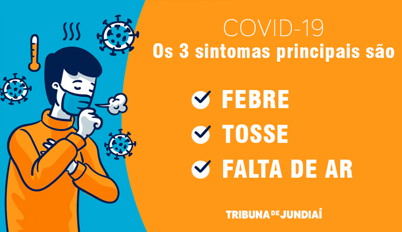
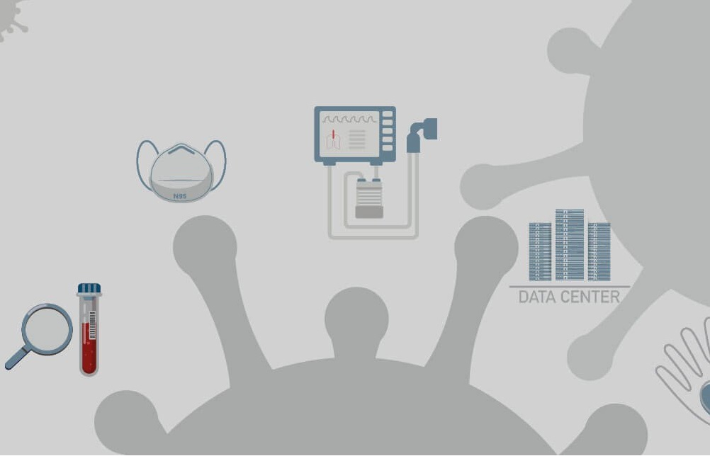

Home
Sobre
Contato
Saiba mais

O que é COVID-19? Quais são os sintomas?
O que é o Coronavírus? De onde ele surgiu? Por que ele é tão perigoso? Entenda tudo o que sabemos até agora sobre o novo Coronavírus
Boletim: Internações voltam a crescer em todo o Estado

Estamos juntos no combate ao novo coronavírus É nos grandes desafios que redescobrimos a força transformadora da nossa energia.
Como se prevenir do novo coronavírus
Boletim: Estudo da Coronavac no Brasil chega à fase final com número mínimo de infectados
2020 - Todos os direitos reservados